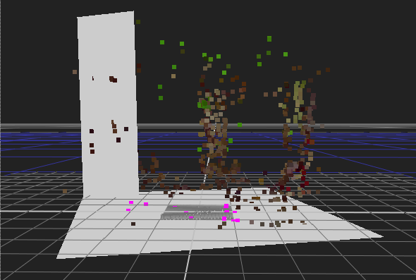

可以使用相机和点云将几何图形添加到场景中。您可以手动添加对象，但是将它们放置在相机视野中的所需位置可能会很耗时。CameraTracker 提供自动创建功能，帮助您实现所需的结果。
| 1。 | 在 2D 视图中，选择平面上的点以保持几何。例如，您可以将卡片放置在垂直或水平平面上。 |
提示: 您可能会发现在 2D 板和 3D 点云之间进行交换有助于定位潜在的点。
| 2. | 将选框拖动到所需的点或按住 转变 键入并单击各个点。 |
| 3. | 在 2D 查看器中的选定点上单击鼠标右键，然后选择 创建 显示可用几何图形的菜单。 |
| 4. | 选择所需的形状，使用所有选定点的平均位置将其放置在场景中。 |
下面的示例演示使用垂直平面和水平平面上的点在场景中放置的两张卡片。

|
|